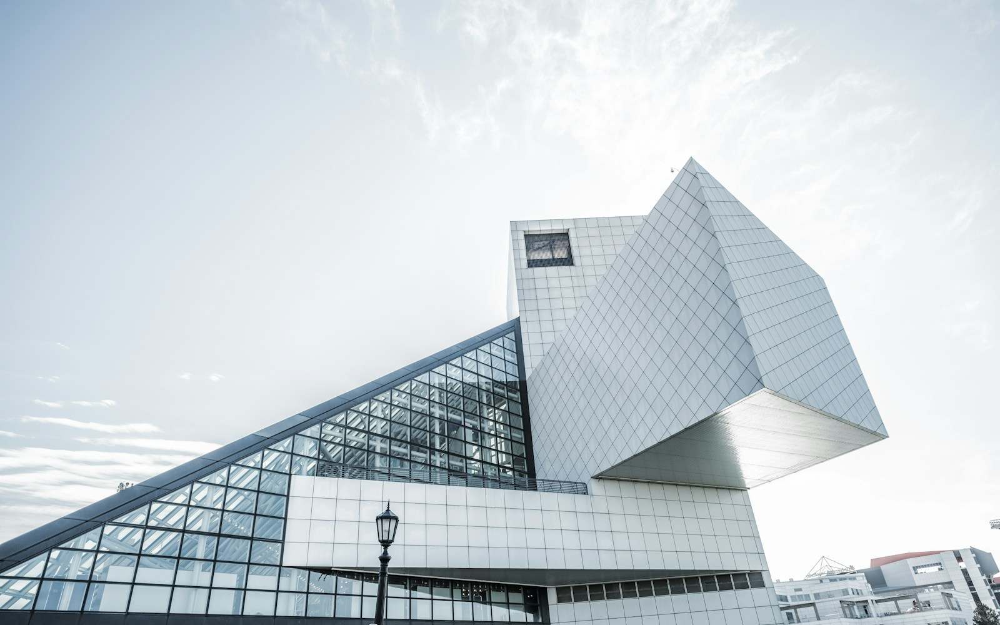

光经过的地方
一座建筑里的光，并不只来自窗户。墙面反射的亮度、廊道尽头的一片天空，都在悄悄改变空间的表情。留意清晨和傍晚的区别，便能看见同一个房间的两种性格。
材料 / 光线
ARCHITECTURE / SPACE / EVERYDAY
从一扇窗，看见空间与生活的关系。
一座建筑里的光，并不只来自窗户。墙面反射的亮度、廊道尽头的一片天空，都在悄悄改变空间的表情。留意清晨和傍晚的区别，便能看见同一个房间的两种性格。
材料 / 光线比起远处的天际线，路边的一张长椅、一段可以停留的台阶，更直接地影响着人们怎样使用城市。好的公共空间，往往从愿意为一个人多留一点位置开始。
街道 / 公共空间空间不必被家具和物品填满。适当的空处，让人的行走有了余地，也让生活能够不断变化。设计中的克制，有时是在给未来尚未发生的日常预留位置。
居住 / 日常ABOUT
构筑笔记记录城市里可被触摸的细节：尺度、材料、光，以及空间被人们使用时的模样。
回到开头 ↑